恒大的一箭三雕众房企的东施效颦
恒大的“一箭三雕”、众房企的“东施效颦”
几天前，好友的5个公号接到恒大的广告投放，5-30万，分别为地产号和财经号。
据悉，恒大此次花费巨资投放的广告潮，刷屏近几日的众自媒体和朋友圈，恒房通也屡现朋友圈。
朋友深耕自媒体七年，提及恒大投放营造的此次广告潮，评价为罕见。据悉，房企常年都会在众媒体投放广告，做品牌维护（负面保护）。
为了防水军和恶意投诉，写这篇文章前，提前准备好了，后续可能被和谐申诉需要用到的所有证据。
** 壹 **
行业的一位老前辈说过，房企三巨头中：
碧桂园越来越像一家广告公司和代理公司，铺天盖地的广告和人海战术；
万科越来越像一家投资管理公司，住宅、商业、养老、租赁、产业、物业、物流、装修、教育等，几乎各方面都有所涉及。
恒大呢？越来越像一家金融公司。恒大是典型的金融玩法，寻常人看不懂，算不清账。有兴趣的可以去研究下恒大的三轮战投。
恒大这次的规则，不再重复了，我们直入主题，引用知乎上的某个段子：
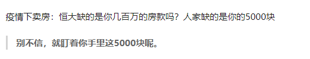
是的，本质上，还是那位行业老前辈说的：地产即金融。
人家恒大玩的，根本不是地产，是金融。
** 贰 **
截至2019年6月底，恒大的债务 光是一年以内到期的就有3758亿，而总借款8132亿 ， 且融资成本不断上升。
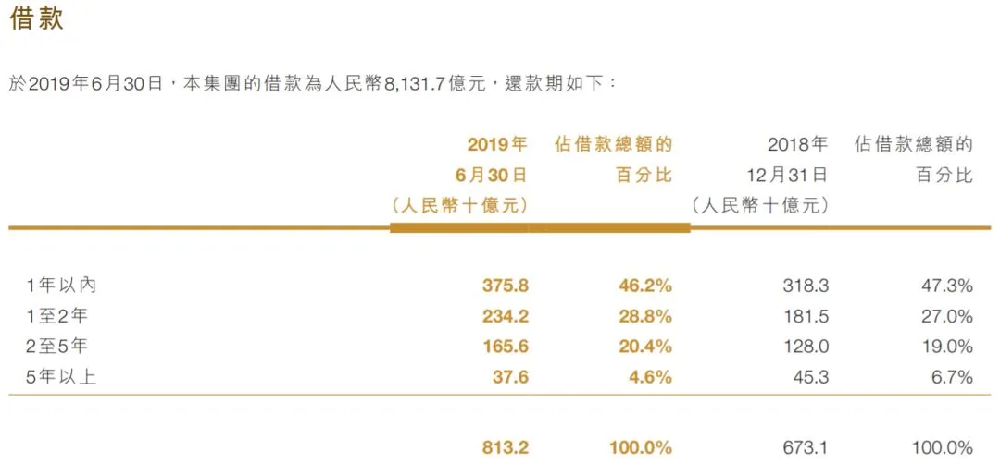
** **
恒大的最新市值：2499亿。
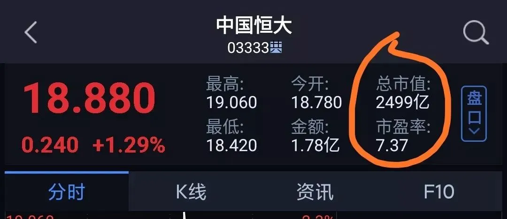
截止2019年6月30日，恒大总负债 1.99万亿，是的，没有看错，1.99万亿。
** **
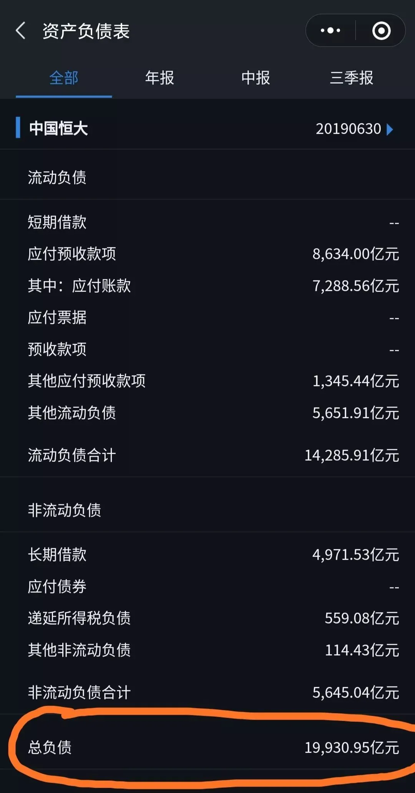
恒大的净负债权益比超过150%，债务水平远高于行业平均水平；而作为对比，同为华南五虎、房企三巨头之一的万科， 截止2019年上半年，净负债率仅为35%；
按照2017年作出的承诺，恒大应于2019年中期将净负债率降至100%以下，但恒大并未做到。截止2019年中期，恒大的净负债率是152%
恒大有3758亿，约占比46.2%的债务，将在今年年中到期。
在1月16日-21日，恒大先后发行的四笔票据，共融资60亿美元，利息高达11.5%—12%，这是什么概念呢？
龙湖2019年公布的融资成本为4.315%；一度靠不断卖项目求生的泰禾 ，融资利息最高时为15%
资本市场对恒大负债问题的担忧，可以从股价上窥一斑，一月以来，恒大的股价跌了约20%，非常不凑巧的是：
这次的春节期间休市，让房地产行业的销售额断崖式跌落谷底，现金流大受影响。
对高负债高周转的房企，更是雪上加霜。
据恒大公布的数据：
恒大集团在线举行全面实施网上销售新闻发布会，副总裁刘雪飞介绍，网上销售在短短3天内被认购了4.75万套，总价值达到580亿元，恒大全国600多楼盘均有认购，最多的楼盘被认购了870套。（证券时报）
3天，47540套，5000元定金，约2.37亿资金，免息，大约可使用3个月；若 按恒大的融资 成本 1 2 %算，近 6 90万 。 并且，目前这个雪球还在越滚越大。
** 叁 **
当然了，这次恒大的活动，并没有那么简单。确切来说，应该是：一箭三雕
恒大集团在线举行全面实施网上销售新闻发布会：恒大网上销售通过“恒房通”平台，近日新增用户超过300万，累计用户达到1000万。刘雪飞表示，恒房通一直是房地产兼职销售员最多的平台，未来用户可能过亿，不排除销售其他房企项目，以及汽车等大宗网购。（证券时报）
前文说到，一月份以来，恒大的股价下跌了约20%，资本市场的护城河，向来是上市公司非常注重的构筑环节。恒大此举，释放利好，有利于稳定股价和投资者信心；
给当下的市场，打一强心剂，提振和稳定市场信心，同时尽最大可能回笼资金；
让营销走出地产行业，尽最大可能变成真正意义上的全民营销，同时，提升品牌知名度；
至于说，恒房通新增300万用户，累计用户1000万，“ 不排除销售其他房企项目，以及汽车等大宗网购。”， 天机个人不看好：
1、无效的垃圾废流量太多，精准流量太少；恒大内部的职员反馈也并不好，如：
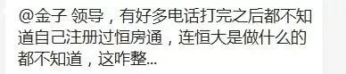
2、员工恒房通任务指标过重，导致为了完成任务而剑走偏锋，某宝上非常多这类店铺，天机随手截一个截图，如：
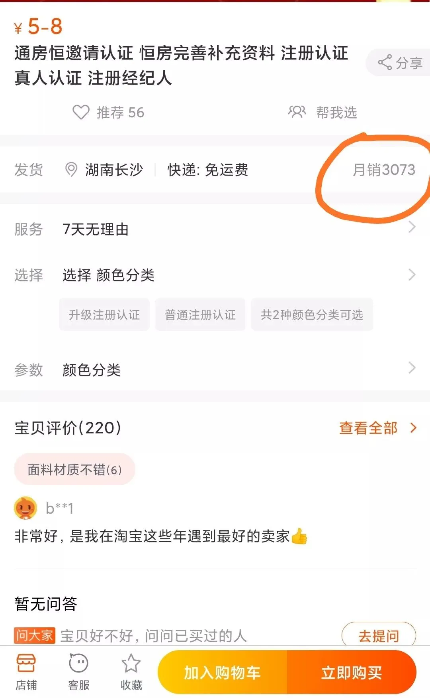
反映恒房通问题的帖子，也非常多，随手截两三个：
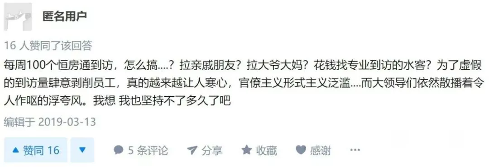
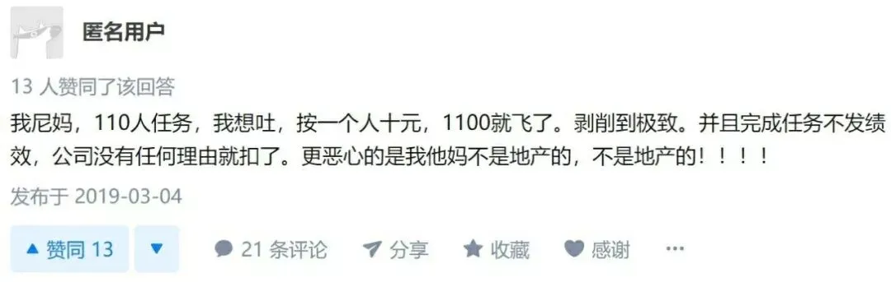
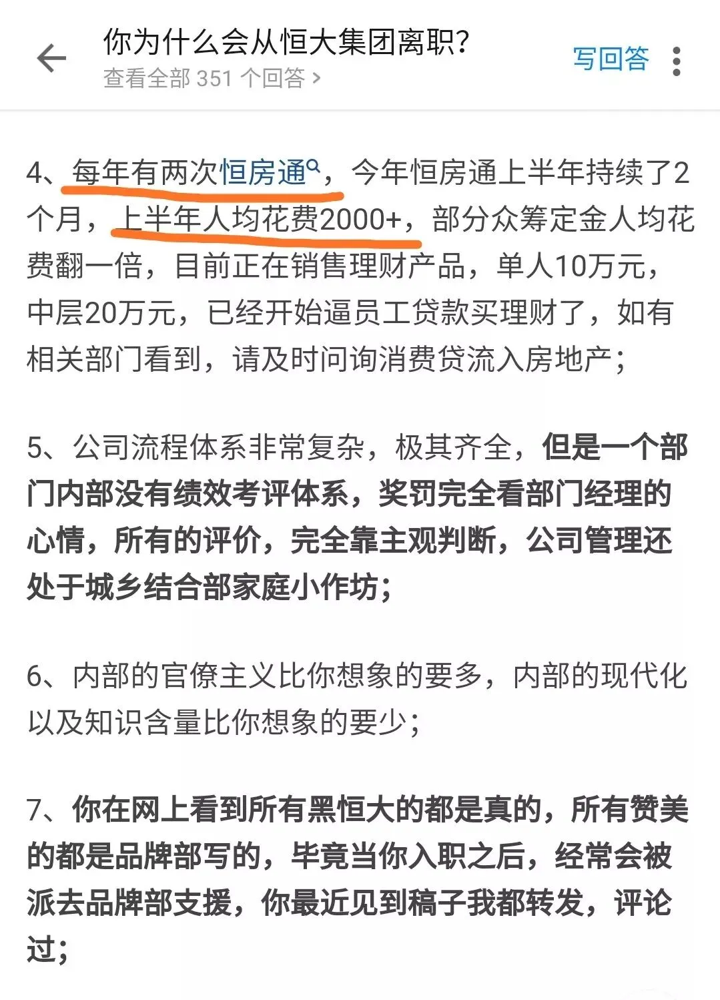
** 肆 **
其实，本次恒大的活动中，很多市区的项目都不参与本次活动。
而一些参与本次活动的项目，似乎也有点....大家细品：
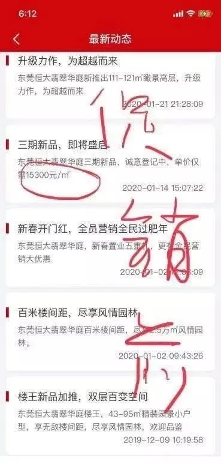
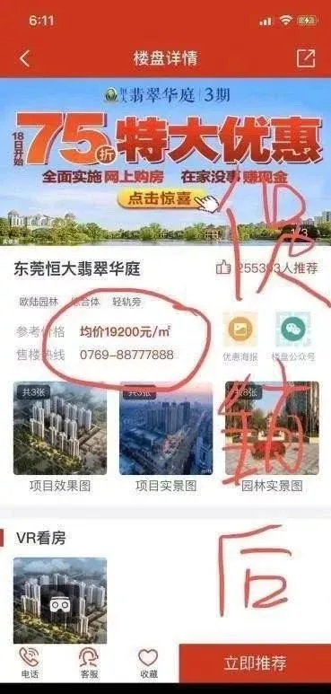
过往，恒大也经常玩这类活动， 百度搜一下关键词：恒大打折，2016年就有8折，2018年底住房9折+商铺8折，2019年8月推出过500多个楼盘7.8折。
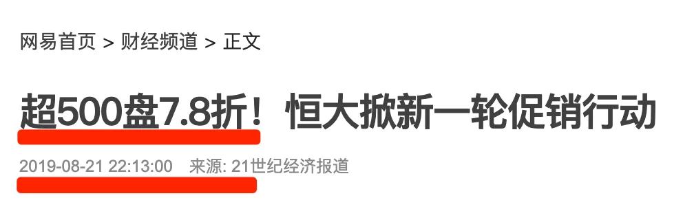
业内人士和资深炒房客都知道，一个楼盘有没有真的比前期降价：
最明显的，是看早期业主有没有去抗议、砸售楼处，这些人才是最好的降价广告。
一位在恒大工作的朋友，两年前，经常在朋友圈刷屏，比微商还勤快，一天十几条到三十几条朋友圈，被天机调侃 要 将其拉黑，无奈地说，是工作要求。
就怕玩金融的，突然学会广告公司的玩法，那就惨了。比如这次，铺天盖地，全都是恒大，搞得后来朋友圈和微信群都不想打开了。
** 伍 **
有人说，恒大付出的代价也够诱人的。
这类老兄八成是不了解这些年房地产行业的营销的渠道成本，按分销佣金3%来算就好，此次恒大参与活动的项目，大部分是近郊和郊区的项目。
而市场上这类产品的渠道佣金点数，有的高达10%（具体看城市、看地区）。
在当下的市场，朋友圈的房企们都在玩线上售楼部、直播......
说实在的，什么“XX（城市）李荣浩”、“XX（城市）杨丞琳”，线上的众生百态，线下营销线压力山大，老板要回款，公司有各项指标，现在还要化身优秀主播，简直无所不能。
在恒大公布的数据“取得成效”后，各房企纷纷跟进，但怎么读，都觉得没有形成完整的闭环。比如：“无理由退房”和线上购房，必须得是一套组合拳。
众多房企纷纷跟进，但怎么看，都浓浓的“东施效颦”的感觉。
人家恒大的玩法，是典型的金融玩法，许老板把房子当房子当金融产品来玩，不算细账，算大帐，典型的金融思维。 职业经理人只需要听从老板的战略布局，做好份内的工作即可，比如营销线做好营销，品牌部做好公关。
而其他的房企老板，大部分还是典型守旧的房地产老派营销思维。 这要管，那也要管，营销上、成本上，处处算细账，大帐却算不过来。 甚至，对营销不专业，还要介入亲自指挥，不给专业的职业经理人们足够的空间，还要有好业绩....
许老板的背景也很有意思，和另一个房企巨头孙老板一样有意思。房企老板们的起家和背景系列，硬核，都是目前市面上没有的内容，已经着手在写，后续看情况，预计会发在另一个备用公号上。
夜深，匆匆收笔。 预知恒大后事如何，且听下回分解。周公 助我，退 沙雕水军 。

按日期浏览全部来源（同日按条目标识排序）